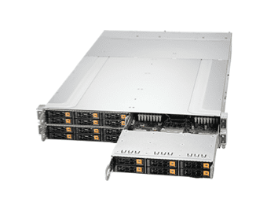
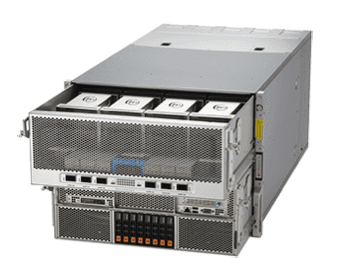
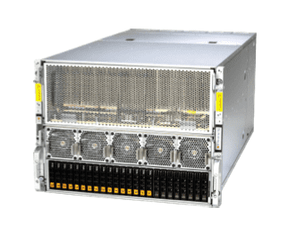
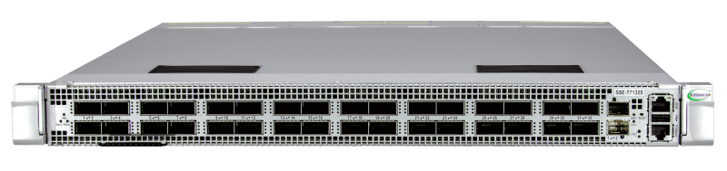
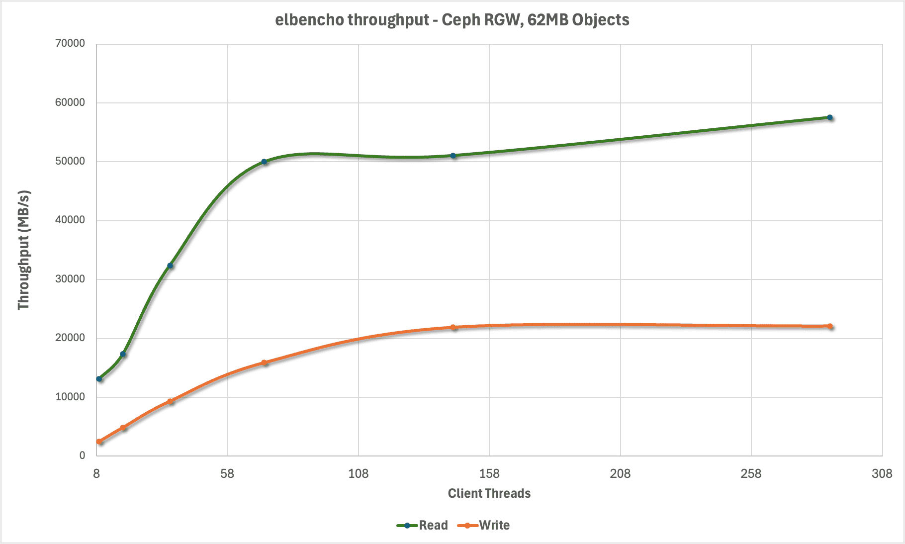
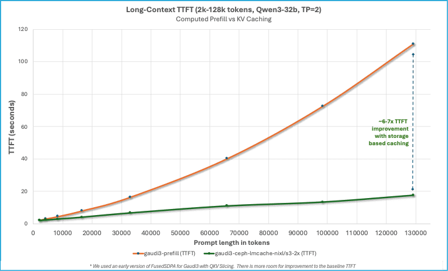
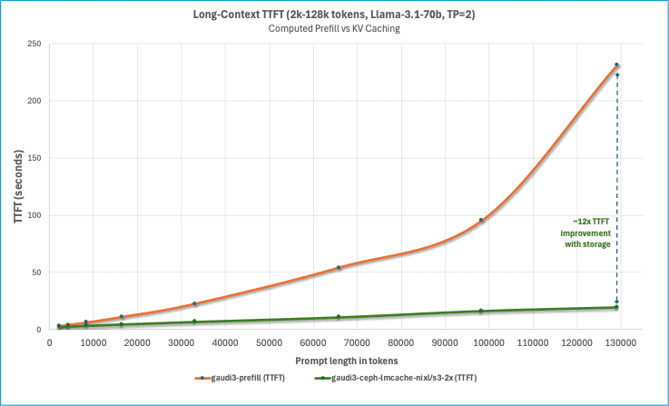
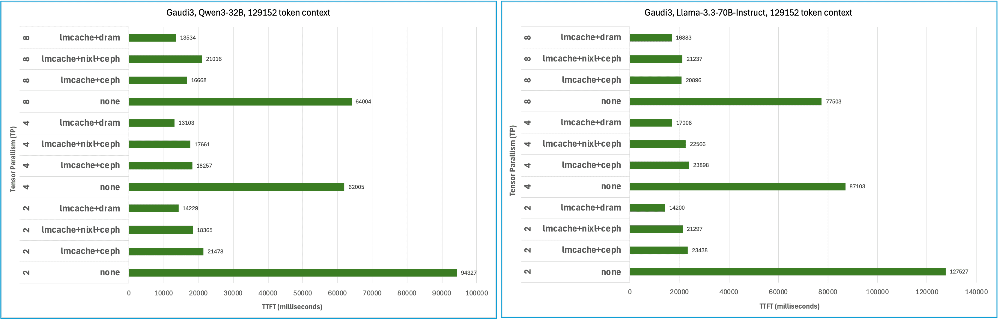
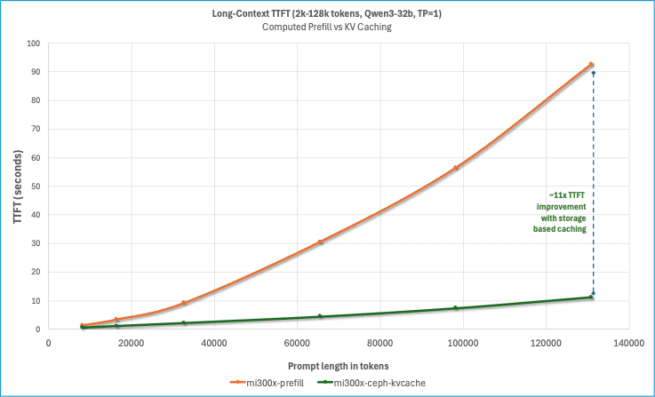
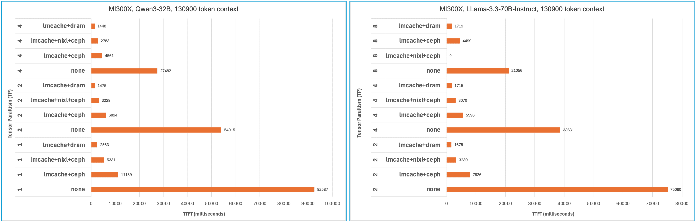

KV Caching with vLLM, LMCache, and Ceph

Inference accounts for 90% of machine learning costs for deployed AI systems, and it is no surprise that inference optimization is a burgeoning topic in the research community. IDC estimates that global enterprises will invest $307 billion USD on AI solutions in 2025, and that number is expected to grow aggressively year-over-year.
Understanding the workload ¶
Unlike training, inference for autoregressive language models only involves the forward pass, which itself is broken up into two distinct phases: prefill and decode. Each phase has a unique workload profile – prefill tends to be computation bound, consuming every ounce of floating-point arithmetic capability the system can garner, followed by decode, which is principally limited by memory bandwidth.
The computational complexity of both prefill and decode phases grows quadratically with each additional token. Prefill is easily parallelized across GPUs - all prompt tokens are known up front when a request arrives at the model API. The decode phase brings in the transformer multi-headed attention mechanism and must compute the attention states across all previous tokens - including any prompt(s) and generated responses. This complicates the deployment of inference services where context lengths are growing rapidly to accommodate larger code bases, longer documents, and retrieval augmented generation. KV caching is where the computed key and value weights that correspond with token sequences in a prompt are saved for later, and then retrieved when they are used in a subsequent prompt to avoid the cost of computation (GPU hours) and to reduce the time between when the prompt was submitted as a request and the first response token (time-to-first-token, or TTFT).
Cache blocks in vLLM and LMCache ¶
vLLM takes a hierarchical approach to KV caching. First it checks for the existence of cache blocks in GPU memory, if there is a cache miss it will progress to CPU memory, and if there is again a cache miss it will try to retrieve cache blocks over any configured KV connectors. LMCache works with vLLM over this KV connector interface - vLLM sends or requests cache blocks and LMCache works to diligently store or stream cache blocks it locates. vLLM also introduced the technique of Paged Attention, which breaks up prompts into fixed sized token sequences referred to as a block, 16 tokens by default. LMCache uses a larger 256 token block by default, presumably to reduce the overhead of managing reference to many blocks and to better amortize the per-block transfer overhead. Storage folks, being unfamiliar with a token as a unit of measurement for space and IO, might naturally wonder what this translates to in terms of block sizes expressed in bytes. The bytes-per-token is model dependent, because it’s a product of the model’s hidden size, number of key-value heads, number of hidden layers, head dimension, and data type size. For a model like Qwen3-32B this works out to be approximately 62.5 MiB. There is a convenient KV Cache calculator available on the documentation page for LMCache if you want to see how much KV space would be required for any given model or number of tokens.
Content addressable KV storage ¶
vLLM and LMCache both calculate a hash of the token sequence that represents a block and use that as a cache block identifier. This means that vLLM will pass over the kv-connector interface the hashes of cache blocks that it is interested in, and LMCache will return a bitmask indicating which cache blocks it can provide. Under the covers the LMCache S3 connector will make GetObjectAttributes calls with each block identifier (hash of the token sequence) and for each block that exists it will flip the corresponding bit in the mask. The elegance of this approach is that there is no cache block map that needs to be persisted, and no coordination necessary when there are multiple instances of vLLM+LMCache running across different hosts. In fact, there is no requirement that the LMCache controller be configured at all. This design also permits flexible eviction: a storage system could implement time-based expiration via Lifecycle configurations, and any deleted block simply registers as a miss. In the end you get fully elastic content addressable storage for KV cache blocks with flexible eviction. Anyone familiar with Ceph will truly appreciate the notion of computing the location of data over performing a lookup.
Retrieving cache blocks ¶
We began exploring LMCache by testing its native S3 connector with Ceph, as it provides an accessible entry point for most existing environments. The other appeal of the native S3 connector in LMCache is that it leverages an AWS common runtime library (CRT), which means that the connections in the client’s connection pool will be multiplexed across endpoints that are returned in the DNS response for the object store’s FQDN. The downside is that the bindings in the AWS common runtime library for Python only support recv_filepath and send_filepath, which limits the ability of LMCache to stream the response body of a GetObject call directly to page-locked memory buffers allocated by the LocalCPUBackend. To work around this limitation the connector pre-allocates and mmaps files on a tmpfs mounted at /dev/shm (one per concurrent request), in this way the CRT client can pass the file descriptors of memory mapped files and then memcpy from their corresponding buffers to page-locked LocalCPUBackend buffers that are used for DMA transfers to the GPU. This is a clever way of working around most of the limitations of aws-crt-python, but to get true zero-copy it will require changes to the bindings.
After some preliminary testing with the native S3 connector LMCache PR#1939 caught our eye because leveraged the NVIDIA Inference Xfer Library (NIXL). This PR introduces the ability to directly read S3 data into page-locked NIXL buffers, bypassing files on /dev/shm and the associated memory copy. It also introduced a presence cache to eliminate redundant GetObjectInfo requests that are used to determine if a cache block exists for a given sequence. We had experimented with the NIXL obj plugin already and ran some rudimentary nixlbench tests. What we found was that the NIXL obj plugin alone wanted a pre-allocated pool of object keys, and that it required either the LMCache coordinator or Dynamo KVBM to maintain device ID, offset, and length information for each cache block. Unlike other NIXL plugins, the obj plugin could only write a single cache block to each device ID (1:1 mapping with object key), because object APIs like S3 do not support writes to arbitrary offsets. This is all addressed by PR1939, because instead of using a pool of object keys and tracking cache block metadata, it preserves the content addressable approach of LMCache’s native S3 connector. The only remaining downside with NIXL is that it used S3Client instead of S3CrtClient, the latter of which supports multipathing across S3 endpoints.
Hyperscale AI deployments ¶
Drawing from over a decade of experience selecting hardware for Ceph storage systems we had an idea of what sort of system we would want to build to maximize throughput, while also drawing inspiration from choices made by major AI practitioners like Meta and OpenAI. Enter Meta’s contribution to the Open Compute project – the Yosemite V3.5 Sierra Point server platform. The YV3.5 cubby occupies 3 OU and can be populated with 6x Sierra Point blades. Unlike conventional enterprise blade systems the YV3.5 platform does not have an integrated ethernet switch, instead each Sierra Point blade has OCP 3.0 slot for direct to host network connectivity. We wanted a system that was a spiritual successor to YV3.5 and Sierra Point, that reaped the advantages of cutting-edge processor designs and lithography. While surveying the server landscape across a whole host of OEMs there was one system that caught our attention, the Supermicro X14 2U 4-node GrandTwin Rear IO.

Supermicro X14 2U 4-node GrandTwin Rear IO
Each node:
- 1x Intel Xeon 6 6740E 96C/96T, 205W
- 16x16GB DDR5-6400
- 1x Broadcom 57608 2x200GbE
- 6x 2.5” Kioxia CM6-R, 7.68TB Gen4 NVMe SSD
- RAID1 2x 480TB NVMe (boot)
This system is utilized to provide high-bandwidth all-flash object storage for the AI solution using IBM Storage Ceph 8.1.

Supermicro Gaudi 3 AI Server SYS-822GA-NGR3
- 2x Intel Xeon 6 6960P 72C/144T
- 24x 64GB DDR5-6400
- 8x Gaudi 3 HL-325L accelerators
- Up to 8x 2.5" Gen5 NVMe SSD
- Scale-up networking: 21x 200GbE Gaudi NICs
- 2x Broadcom 57608 1x400GbE
This system is utilized to run inference workloads with the combination of vLLM and LMCache, leveraging Gaudi 3 accelerators from Intel.

Supermicro GPU A+ Server AS -8125GS-TNMR2
- 1x AMD EPYC 9654 96C/192T
- 24x 96GB DDR5-4800
- 8x AMD MI300X accelerators
- Up to 8x 2.5" Gen5 NVMe SSD
- Scale-up networking: 4x400GbE
- Storage and GPU scale-out networking: 4x NVIDIA MT28908 ConnectX-6 200GbE
This system is utilized to run inference workloads with the combination of vLLM and LMCache, leveraging MI300X accelerators from AMD.

SSE-T7132S - 400Gb Ethernet Switch
- 32x QSFP-DD 400GbE, or 64x QSFP56 / 128x QSFP28 with breakout cables
- 25.6Tb/s switching capacity
- SONiC OS
- RoCEv2/RDMA support with PFC
For simplicity we used a single fixed-port 400Gb switch for both GPU-to-GPU and the storage fabric.
Host configuration ¶
- Performance profile set in BIOS
- Set the tuned profile to network-latency
tuned-adm profile network-latency
- All hosts were configured with mode 802.3AD with xmit_hash_policy=Layer3+4
Ceph configuration ¶
OSD service ¶
---
service_type: osd
service_id: nvme
placement:
hosts:
- ceph-osd01
- ceph-osd02
- ceph-osd03
data_devices:
paths:
- /dev/disk/by-path/pci-0000:63:00.5-pci-10001:81:00.0-nvme-1
- /dev/disk/by-path/pci-0000:63:00.5-pci-10001:82:00.0-nvme-1
- /dev/disk/by-path/pci-0000:89:00.5-pci-10002:01:00.0-nvme-1
- /dev/disk/by-path/pci-0000:89:00.5-pci-10002:02:00.0-nvme-1
- /dev/disk/by-path/pci-0000:89:00.5-pci-10002:03:00.0-nvme-1
- /dev/disk/by-path/pci-0000:89:00.5-pci-10002:04:00.0-nvme-1
Pool configuration ¶
We decided to pre-create metadata and data pools for RGW before initializing the RGW service.
ceph osd pool set noautoscale
ceph osd pool create default.rgw.buckets.data 2048 2048 replicated
ceph osd pool create default.rgw.buckets.index 64 64 replicated
ceph osd pool create default.rgw.buckets.non-ec 64 64 replicated
ceph osd pool set default.rgw.buckets.data size 2
ceph osd pool set default.rgw.buckets.data min_size 1
ceph osd pool application enable default.rgw.buckets.data
ceph osd pool application enable default.rgw.buckets.index
ceph osd pool application enable default.rgw.buckets.non-ec
RGW service ¶
This RGW service configuration will create 4x RGW instances on each of the 4 hosts, with a concentrator bound to the host IP address at port 80.
---
service_type: rgw
service_id: standard
service_name: rgw.standard
placement:
count_per_host: 4
label: rgw
networks:
- 10.67.67.0/24
spec:
rgw_exit_timeout_secs: 120
rgw_frontend_port: 8080
concentrator: haproxy
concentrator_frontend_port: 80
concentrator_monitor_port: 1967
concentrator_monitor_user: admin
Traffic management ¶
Like many applications, LMCache expects a single S3 endpoint. For us to maximize bandwidth to storage cluster we decided to leverage Hashicorp Consul and CoreDNS to return multiple DNS records in response to queries for our chosen object FQDN. As stated earlier, this works perfectly with AWS CRT libraries like those utilized by LMCache’s native S3 connector.
Consul ¶
/etc/consul.d/consul.hcl
datacenter = "smci"
data_dir = "/opt/consul"
bind_addr = "172.19.65.41"
client_addr = "0.0.0.0"
retry_join = [
"172.19.65.41",
"172.19.65.42",
"172.19.65.43",
"172.19.65.44"
]
server = true
bootstrap_expect = 3
services = [
{
name = "s3"
port = 8080
check = {
id = "tcp-check"
name = "S3 TCP"
tcp = "localhost:8080"
interval = "10s"
timeout = "2s"
}
},
{
name = "s3"
port = 8081
check = {
id = "tcp-check"
name = "S3 TCP"
tcp = "localhost:8081"
interval = "10s"
timeout = "2s"
}
},
{
name = "s3"
port = 8082
check = {
id = "tcp-check"
name = "S3 TCP"
tcp = "localhost:8082"
interval = "10s"
timeout = "2s"
}
},
{
name = "s3"
port = 8083
check = {
id = "tcp-check"
name = "S3 TCP"
tcp = "localhost:8083"
interval = "10s"
timeout = "2s"
}
}
]
CoreDNS ¶
/etc/coredns/Corefile
.:53 {
log
errors
forward . 8.8.8.8
}
cephlab.com {
file /etc/coredns/cephlab.com
prometheus
errors
log
debug
}
consul {
forward . 172.19.65.41:8600 172.19.65.42:8600 172.19.65.43:8600 172.19.65.44:8600
log
errors
}
s3.cephlab.com {
rewrite stop {
name exact s3.cephlab.com s3.service.consul.
answer name s3.service.consul. s3.cephlab.com.
}
rewrite stop {
name regex (.*)\.s3\.cephlab\.com s3.service.consul.
answer auto
}
forward . 172.19.65.41:8600 172.19.65.42:8600 172.19.65.43:8600 172.19.65.44:8600
log
errors
debug
}
example.hosts s3.ecmp.cephlab.com {
hosts {
10.67.67.67 s3.ecmp.cephlab.com
10.67.67.67 nixl.s3.ecmp.cephlab.com
fallthrough
}
whoami
}
Testing DNS balancing ¶
To validate that the Hashicorp Consul and CoreDNS based approach is functioning properly, we can test DNS resolution of our object FQDN of our object endpoint. Note that we’re seeing 4 records returned, which is exactly what we want.
[cephuser@ceph-osd01 ~]$ dig s3.cephlab.com
; <<>> DiG 9.16.23-RH <<>> s3.cephlab.com
;; global options: +cmd
;; Got answer:
;; ->>HEADER<<- opcode: QUERY, status: NOERROR, id: 12051
;; flags: qr aa rd; QUERY: 1, ANSWER: 4, AUTHORITY: 0, ADDITIONAL: 1
;; WARNING: recursion requested but not available
;; OPT PSEUDOSECTION:
; EDNS: version: 0, flags:; udp: 4096
;; QUESTION SECTION:
;s3.cephlab.com. IN A
;; ANSWER SECTION:
s3.cephlab.com. 0 IN A 172.19.65.41
s3.cephlab.com. 0 IN A 172.19.65.42
s3.cephlab.com. 0 IN A 172.19.65.43
s3.cephlab.com. 0 IN A 172.19.65.44
;; Query time: 1 msec
;; SERVER: 172.19.65.41#53(172.19.65.41)
;; WHEN: Tue Nov 04 12:33:03 PST 2025
;; MSG SIZE rcvd: 163
Baseline performance ¶
To establish the baseline performance of the storage cluster before we introduce vLLM and LMCache we assessed the performance using elbencho to generate load from the Gaudi3 GPU host and direct it towards the Ceph S3 endpoints. We used a 62MB block size to match the expected size of KV cache blocks being persisted by LMCache. This shows that we’re able to multiplex connections across the concentrator endpoints on each host and drive a considerable amount of S3 traffic from even a single host, topping out at nearly 60 GB/s.

vLLM ¶
At the time of our testing the vllm production stack did not support our end-to-end workflows, so we created customized vLLM container images that incorporated a LMCache development release, including one that incorporated the latest vllm-gaudi development for our testing.
AMD Container
- vLLM:
- LMCache:
- NIXL:
Gaudi Container
- vLLM:
- LMCache:
- NIXL:
Below you will find the configuration files and command line arguments we used to run vLLM and LMCache together.
.aws/credentials
[lmcache]
region = default
endpoint_url = http://s3.cephlab.com:80
aws_access_key_id = xxx
aws_secret_access_key = yyy
response_checksum_validation = when_required
preferred_transfer_client = crt
lmcache-ceph.yaml
chunk_size: 256
local_cpu: False
max_local_cpu_size: 100
remote_url: "s3://lmcache.s3.cephlab.com"
save_unfull_chunk: False
enable_async_loading: True
remote_serde: "naive"
blocking_timeout_secs: 100
extra_config:
s3_max_io_concurrency: 1024
s3_max_inflight_reqs: 1024
s3_prefer_http2: False
s3_region: "default"
s3_enable_s3express: False
save_chunk_meta: False
s3_file_prefix: "test"
lmcache-nixl-ceph.yaml
chunk_size: 512
local_cpu: false
max_local_cpu_size: 50
remote_serde: "naive"
nixl_buffer_size: 1073741824
nixl_buffer_device: cpu
extra_config:
enable_nixl_storage: true
nixl_backend: OBJ
nixl_pool_size: 512
nixl_backend_params:
endpoint_override: http://s3.cephlab.com
access_key: CR98FOT054QZJ60NR7E3
secret_key: 15CTFkiAdwPkkiSh4gOlQ5zF14KZ0uCnZloYVo3w
scheme: http
region: default
req_checksum: required
bucket: lmcache
lmcache-dram.yaml
chunk_size: 256
local_cpu: True
max_local_cpu_size: 50
save_unfull_chunk: False
enable_async_loading: True
remote_serde: "naive"
blocking_timeout_secs: 100
Starting vLLM
LMCACHE_CONFIG_FILE="/root/lmcache-nixl-s3.yaml"
LMCACHE_USE_EXPERIMENTAL=True
PYTHONHASHSEED=67
AWS_PROFILE='lmcache'
vllm serve Qwen/Qwen3-32B \
--gpu-memory-utilization 0.55 \
--rope-scaling '{"rope_type":"yarn","factor":4.0,"original_max_position_embeddings":32768}' \
--max-model-len 131072 \
--kv-transfer-config '{"kv_connector":"LMCacheConnectorV1","kv_role":"kv_both","kv_parallel_size":"16"}' \
--tensor-parallel-size 2
For the Gaudi3 accelerator testing we set the following additional environmental variables:
PT_HPU_GPU_MIGRATION=1
VLLM_USE_V1=1
VLLM_SKIP_WARMUP=True
VLLM_EXPONENTIAL_BUCKETING=False
Benchmark ¶
We wanted to characterize the reduction in time-to-first-token for a 100% cache hit rate from remote storage with Ceph across various context lengths, and chart it relative to computational prefill. For this we selected the LMCache long_doc_qa.py. We developed the following methodology for TTFT data collection:
- Start vLLM
- Run long_doc_qa.py and record TTFT for the warm-up round (computational prefill result)
- Restart vLLM
- Run long_doc_qa.py and record TTFT for the warm-up round (KV cache hit from remote storage result)
- Stop vLLM
- Remove cache blocks from remote storage
By restarting vLLM in step 3 we ensure that the results are not skewed by KV caching in GPU HBM or CPU memory, and by stopping vLLM and removing cache blocks from remote storage we ensure that each subsequent context length is not benefitting from remote storage KV caching from the previous context length. With this methodology all KV caches are cold at the beginning of each test, except for remote storage KV caching which we want to measure the benefit of in step 4.
long_doc_qa.py example command line
python3 ~/LMCache/benchmarks/long_doc_qa/long_doc_qa.py \
--model Qwen/Qwen3-32B \
--port 8000 \
--num-documents 1 \
--document-length ${len} \
--output-len 100 \
--repeat-count 1 \
--repeat-mode interleave \
--max-inflight-requests 1 \
--output results/ttft_${L}.out
Results ¶
Intel Gaudi 3 Results ¶



AMD MI300X Results ¶


Considerable reduction in TTFT with both Intel Guadi3 and AMD MI300X accelerators, with the largest measured speed-up of 23x reduction. This testing also illustrates how KV caching can reduce TTFT more than using tensor parallelism to spread prefill across multiple GPUs in a system and that combing these techniques can deliver the lowest TTFT. It’s also worth pointing out that in addition to reducing TTFT, prefix caching derives additional value by conserving GPU cycles for decode – potentially reducing time-per-output-token (TPOT).
What's next? ¶
We shared our results with the llm-d team at Red Hat and have sarted to work with them to commodify KV caching by establishing KV caching with Ceph as a well-lit path. We believe that our approach is perhaps the most accessible because it uses standard object protocols like S3, standard TCP/IP networking, works with a variety of accelerators from different vendors, and because Ceph object is ubiquitously deployed in OpenShift clusters through OpenShift Data Foundation and IBM Fusion. Our next phase of testing will utilize llm-d, with the GPU hosts serving as worker nodes, and exploring more sophisticated scenarios like PD disaggregation and cache blending.
Finally, we'd like to thank Supermicro for providing the environment for these testing efforts. If you have any questions about Data or AI workloads for Ceph, please reach out.